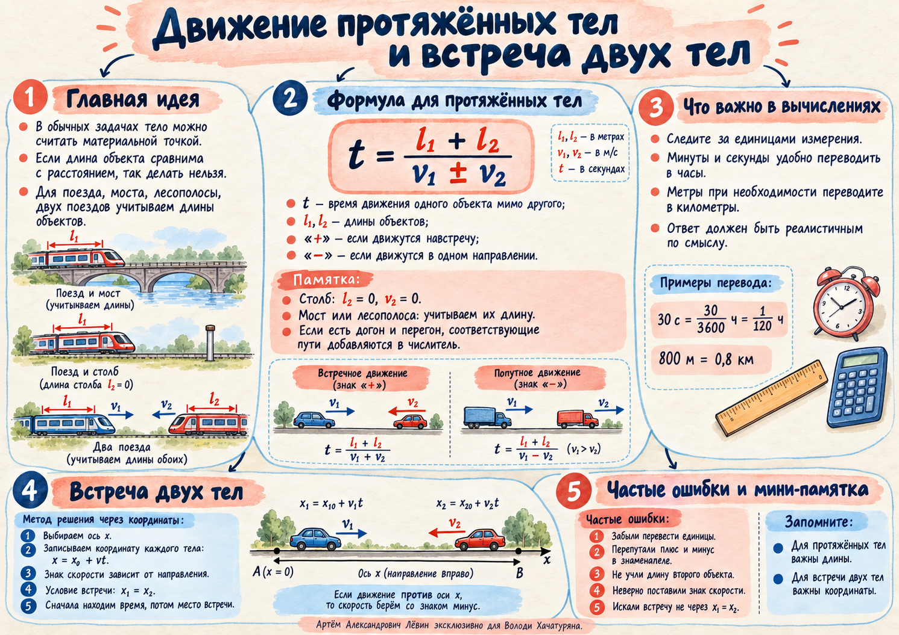

Размер тела меняет задачу. Координаты определяют встречу.
Две идеи занятия: как считать движение поезда, моста или двух поездов, когда их длиной нельзя пренебречь, и как находить время и место встречи через уравнения координат.
Направление движения уже зашито в знаке проекции скорости. Поэтому один и тот же принцип работает и для встречного, и для попутного движения.
Базовая модель
x₁ = x₀₁ + v₁ₓt x₂ = x₀₂ + v₂ₓt
x₁(t) = x₂(t)
Выберите начало отсчёта и положительное направление оси.
Проекция скорости положительна вдоль +Ox и отрицательна против +Ox.
После нахождения времени подставьте его в любое уравнение координаты.
Пример из занятия
A и B разделены расстоянием 120 км. Из A: 90 км/ч вправо. Из B: 110 км/ч влево.
x₁ = 90t x₂ = 120 − 110t
Условие встречи: 90t = 120 − 110t.
t = 0,6 ч x = 54 км
Координата 54 км отсчитывается от A, поскольку там выбрано начало координат.
Критическая мысль: фраза «едут навстречу» сама по себе не является условием встречи. Условие встречи — равенство координат.
04 · МАРШРУТ
Два алгоритма — одна логика аккуратного моделирования
Переключайте шаги. Каждый шаг соответствует алгоритмам из чек‑листа.
05 · ТРЕНИРОВКА
10 задач: от длины поезда до координаты встречи
Путь А из чек‑листа. Решения скрыты; ниже можно открыть только итоговые ответы.
Поезд движется со скоростью 72 км/ч и проходит мимо столба за 25 с. Найдите длину поезда.
Поезд движется со скоростью 90 км/ч и проходит мимо платформы длиной 650 м за 50 с. Найдите длину поезда.
Два поезда длиной 180 м и 220 м движутся навстречу друг другу со скоростями 54 км/ч и 72 км/ч. За какое время они полностью пройдут друг мимо друга?
Два поезда длиной 240 м и 160 м движутся в одном направлении со скоростями 90 км/ч и 54 км/ч. Сколько времени потребуется более быстрому поезду, чтобы полностью обогнать более медленный, если в начальный момент передняя точка быстрого поезда находится на уровне задней точки медленного?
Два судна длиной 80 м и 50 м идут в одном направлении. В начале нос более быстрого судна находится на 170 м позади кормы медленного. Через 20 мин после полного обгона корма быстрого судна оказывается на 300 м впереди носа медленного. На сколько км/ч отличаются их скорости?
Из пунктов A и B, расстояние между которыми 150 км, одновременно навстречу друг другу выехали автомобили со скоростями 60 км/ч и 90 км/ч. Найдите время и место встречи, считая координату от A.
В момент t = 0 первое тело находится в точке x₁ = 20 км и движется вправо со скоростью 15 км/ч. Второе находится в точке x₂ = 140 км и движется влево со скоростью 25 км/ч. Найдите время и координату встречи.
Первый автомобиль стартует из точки x = 0 со скоростью 72 км/ч. Одновременно второй автомобиль находится на 30 км впереди и движется в том же направлении со скоростью 54 км/ч. Через какое время первый автомобиль догонит второй и на каком расстоянии от начала координат?
Тело движется равноускоренно по закону x = x₀ + v₀t + at²/2. Найдите координату через 3 с, если x₀ = 5 м, v₀ = 4 м/с, a = 2 м/с².
Поезд длиной 250 м полностью обгоняет поезд длиной 150 м за 40 с. Медленный поезд движется со скоростью 54 км/ч. Найдите скорость быстрого поезда.
№
Ответ
1
500 м
2
600 м
3
80/7 с ≈ 11,4 с
4
40 с
5
1,8 км/ч
6
1 ч; 60 км от A
7
3 ч; x = 65 км
8
5/3 ч = 1 ч 40 мин; x = 120 км
9
26 м
10
90 км/ч
Акварельная памятка занятия

06 · САМОПРОВЕРКА
Перед ответом проверьте модель, знак и единицы
Две контрольные проверки
1. Два поезда движутся навстречу. Что происходит с относительной скоростью?